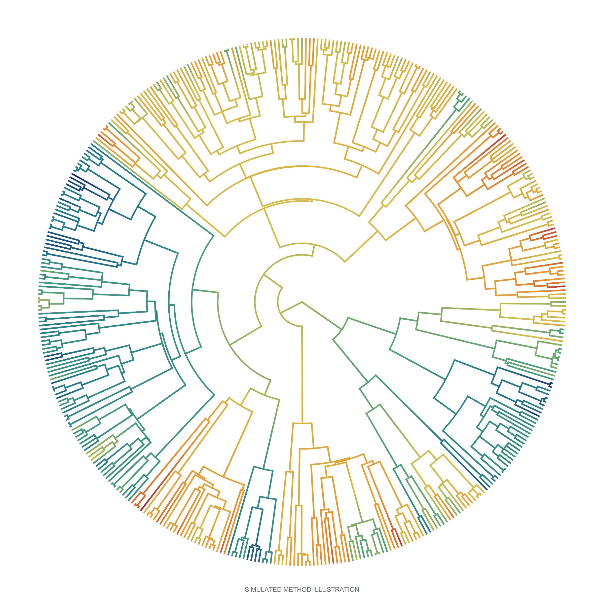
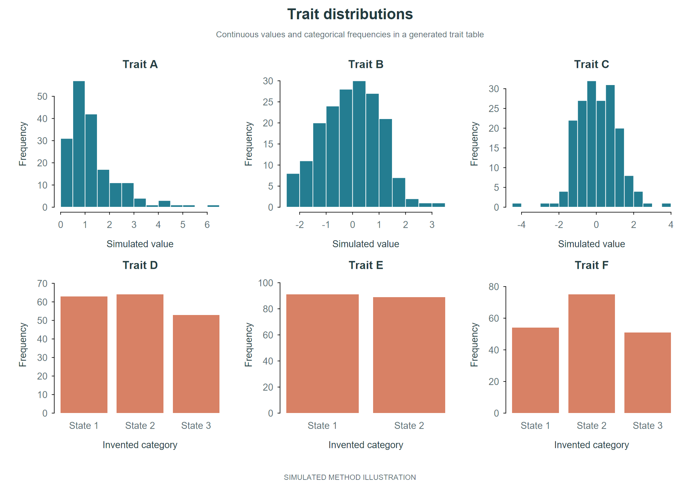
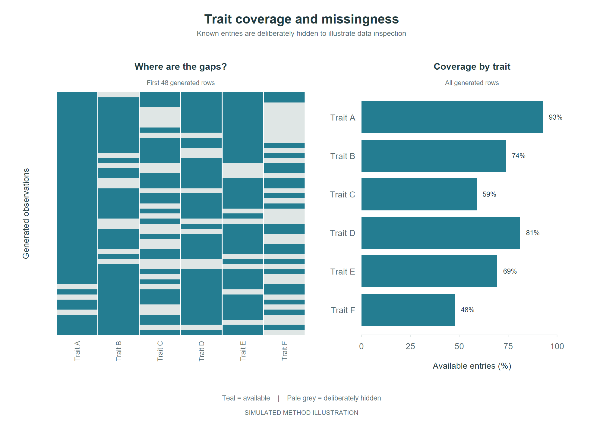
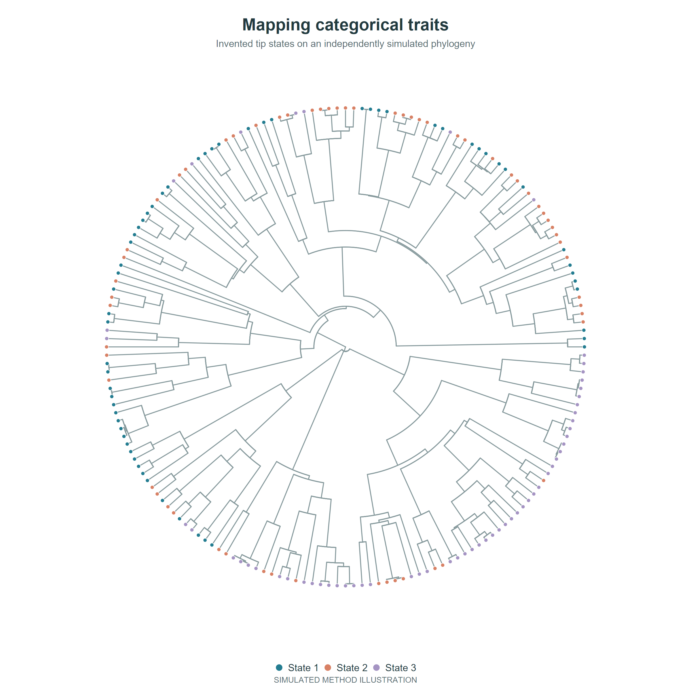
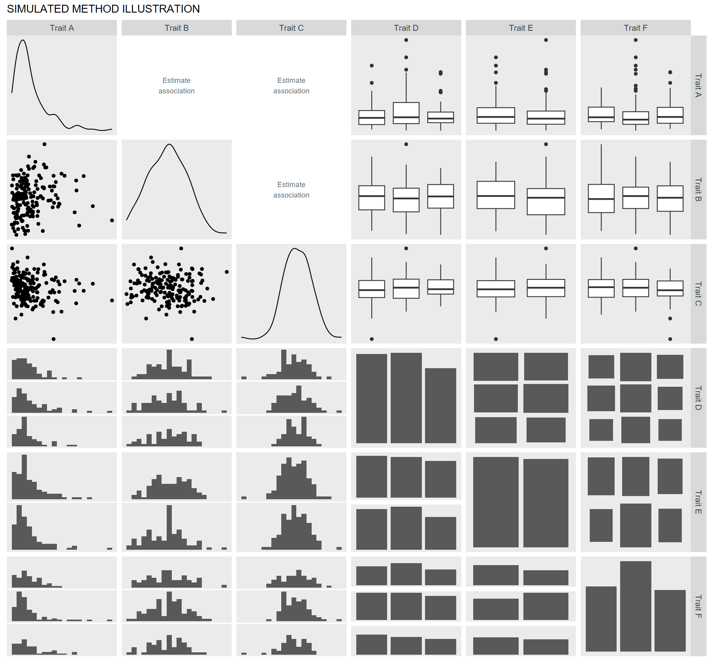
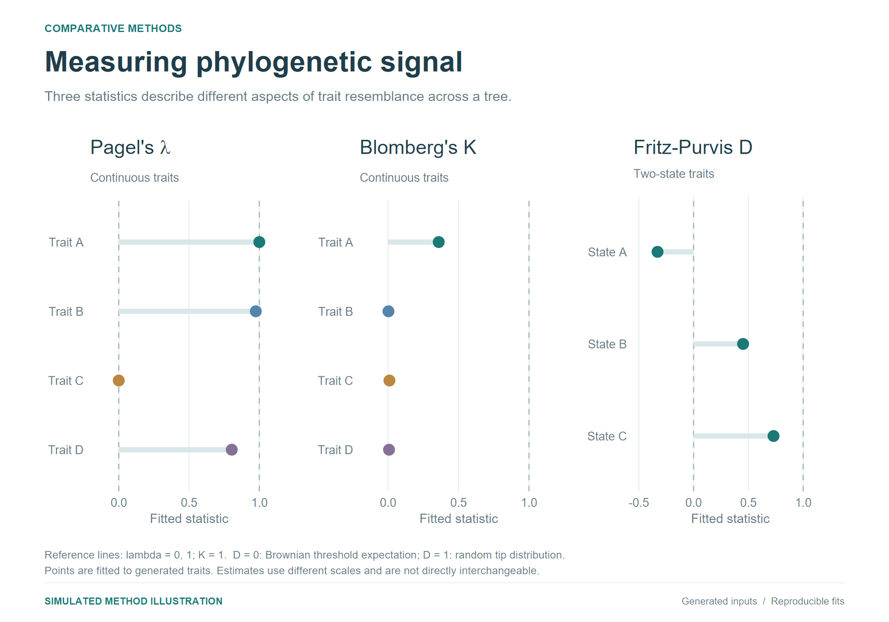
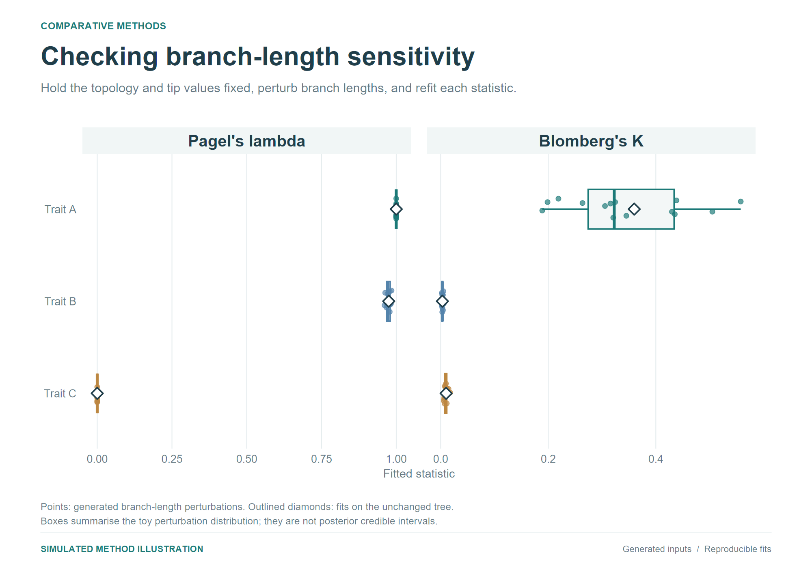
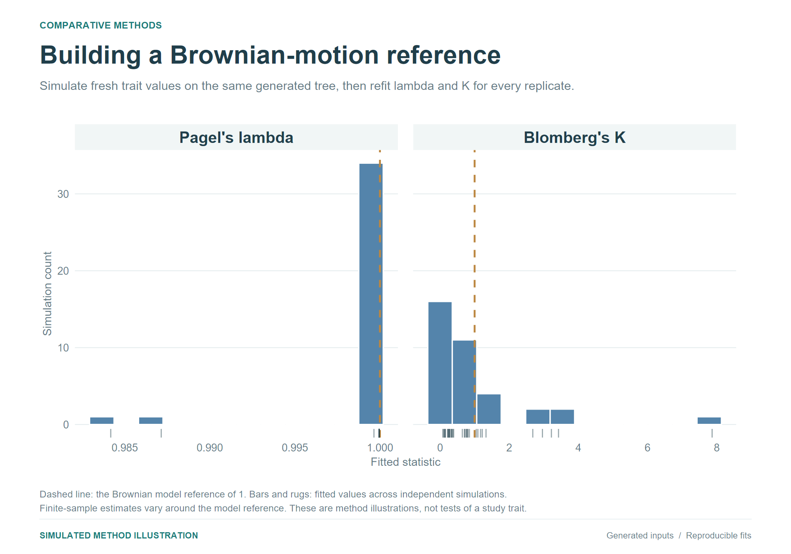
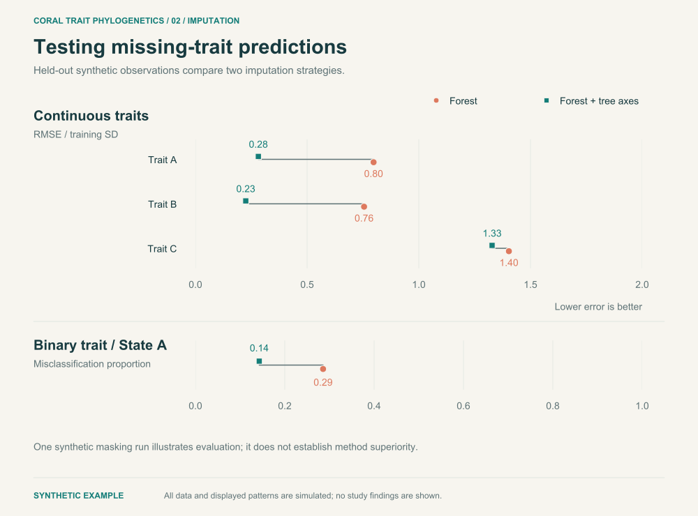
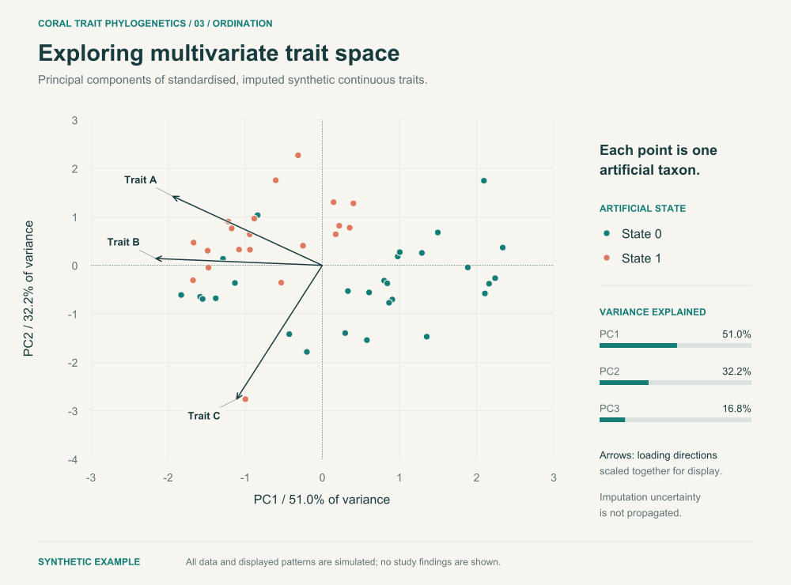

Research methods / Coral ecology
Coral traits.
An evolutionary
perspective.
From compiling trait records to comparing evolutionary patterns: a research workflow for understanding variation across a phylogeny.
Research methods illustrated with independently simulated trees and traits.

Simulated tree and Brownian-motion trait illustration.
The approach
From trait records
to comparative analysis.
The principal research follows observed traits through preparation, visualization and phylogenetic analysis, with simulation used to examine the behaviour of the signal metrics.
- 01
Compile
Clean trait records, harmonize units and categories, summarize repeated observations and resolve duplicates.
Trait preparation - 02
Align
Reconcile taxonomic names with existing phylogenies, retain observed missingness and prune trees for each trait.
Taxonomy & tree matching - 03
Explore
Describe distributions and coverage, inspect pairwise relationships using available observations, and map traits onto trees.
Distributions & trait mapping - 04
Measure
Estimate and compare Pagel’s λ, Blomberg’s K and Fritz–Purvis’ D, with trait preparation suited to each analysis.
Phylogenetic signal - 05
Repeat
Run signal analyses across posterior phylogenies and summarize how estimates vary among trees.
Tree uncertainty - 06
Simulate
Generate traits under Brownian motion and examine the behaviour of λ and K against that reference model.
Metric comparison
Supporting research
Related studies compare random-forest imputation with and without phylogenetic predictors, examine signal after imputation, and explore completed trait tables with PCA. Further work investigates alternative phylogenies, Delta for categorical signal, and alternative trait encodings.
Earlier exploratory work considered geographic assemblages and phylogenetic diversity. The compact public R example implements a selected set of methods using synthetic inputs; the project overview describes the broader research.
A closer look
The methods, in view.
Ten views of the research methods.
All plotted values and relationships are synthetic.

01 / Distributions
Start with the
shape of the data.
Distribution plots describe the variation available for analysis. Continuous and categorical traits call for different views, before any comparison with a phylogeny.
- Read the figure
- Histograms show ranges and shapes; category bars show the frequency of invented states.
- Method
- Continuous-trait histograms and categorical frequency summaries.
- Interpretation
- Each pattern is generated for this illustration. The panels demonstrate the descriptive plots used in the research.

02 / Trait coverage
See where the
observations are.
Available records differ among traits. Inspecting coverage helps define the observations and corresponding tree tips used for each comparison.
- Read the figure
- The heatmap displays a subset of artificial rows. The bars summarize availability across the complete generated table.
- Method
- Missingness mapping and observed-entry summaries.
- Interpretation
- All gaps are deliberately generated. This is a new illustration of coverage inspection, rather than a reconstruction of the study’s missingness pattern.
03 / Continuous mapping
Put traits in
evolutionary context.
Trait mapping places variation within a branching framework. This illustration uses a newly simulated tree and a continuous trait generated under Brownian motion.
- Read the figure
- Follow branches from the centre towards the tips. The changing colours illustrate a continuous trait mapped along the tree.
- Method
- Pure-birth tree simulation, Brownian-motion trait simulation and continuous mapping with phytools contMap.
- Interpretation
- The colours interpolate values reconstructed from simulated tip traits. The circular layout is a presentation choice.

04 / Categorical mapping
Map distinct
trait states.
Categorical traits describe membership in a state rather than a position on a continuous scale. Coloured tips place those states in a phylogenetic context.
- Read the figure
- Each tip carries one of three invented states. Branches show the relationships in the simulated tree.
- Method
- Circular tree layout with categorical tip annotation.
- Interpretation
- Internal branches remain neutral: their colours do not imply inferred categorical ancestral states.

05 / Associations
Exploring traits
together.
A pairs matrix combines views suited to different variable types. The principal research examines relationships using available observations; this illustration recreates the plotting approach with generated toy variables.
- Read the figure
- Diagonal panels show distributions. Other panels use point plots, boxplots and categorical summaries to inspect pairs of variables.
- Method
- Mixed continuous and categorical exploration with a GGally pairs matrix.
- Interpretation
- The panels demonstrate descriptive tools. The variables and their relationships were generated solely for the illustration.

06 / Phylogenetic signal
Quantify patterns
across relatives.
Signal metrics summarize different aspects of how trait values relate to a phylogeny. Every displayed point is a fitted estimate from the synthetic inputs.
- Read the figure
- Separate panels retain the scales of λ, K and D. Compare traits within a metric rather than treating the three estimates as interchangeable.
- Method
- Pagel’s λ and Blomberg’s K for numeric traits; Fritz–Purvis’ D for binary traits.
- Interpretation
- The fitted values demonstrate the calculation. A metric estimate alone is not a significance test or evidence of a causal mechanism.

07 / Tree sensitivity
Check dependence
on the tree.
The research repeats analyses across posterior phylogenies. This compact illustration asks a narrower question: how do estimates change when branch lengths are altered?
- Read the figure
- The boxes summarize fitted λ and K across generated branch-length perturbations. Toy trait values and topology remain fixed.
- Method
- Branch-length perturbation followed by repeated signal estimation.
- Interpretation
- The perturbations are an illustrative sensitivity experiment. They are not a posterior sample, and the boxes are not posterior uncertainty intervals.

08 / Brownian simulations
Give the metrics
a known process.
Simulating trait evolution provides a reference for interpreting a metric’s behaviour. Each replicate generates new Brownian-motion traits and refits λ and K.
- Read the figure
- The distributions show variation among repeated fits. The reference line marks the Brownian benchmark of one.
- Method
- Brownian trait simulation with phytools fastBM, followed by λ and K estimation.
- Interpretation
- This experiment describes performance under its simulated model and tree. It does not establish that the empirical traits evolved under Brownian motion.

09 / Supporting analysis
Check the values
we fill in.
Imputation is a related investigation. In this executable example, known values are temporarily hidden so predictions can be evaluated. Both approaches see the same masked table; one also receives tree-derived predictors.
- Read the figure
- Lower error indicates closer predictions for this synthetic example. The paired values show the difference between the two fits.
- Method
- Random forest imputation, with and without phylogenetic eigenvectors.
- Interpretation
- A single mask is an execution example. It does not establish which approach is better for the empirical study.

10 / Supporting analysis
See variation
across traits.
Principal component analysis brings several continuous traits into a shared view. This supporting analysis uses a completed trait table, with inputs centred and scaled before projection.
- Read the figure
- Each point represents an artificial taxon. Arrows show trait-loading directions; their coordinates share one display multiplier and are not correlation vectors.
- Method
- Standardized PCA after imputation with tree-derived predictors.
- Interpretation
- This view is descriptive. Ordinary PCA does not adjust for phylogenetic covariance or propagate imputation uncertainty.
Explore the implementation
Follow the methods.
Run the example.
The compact public workflow generates its own inputs and exercises alignment, imputation evaluation, signal estimation and multivariate exploration. Its methods and assumptions are documented alongside the code.
Read the full GitHub project overviewRscript scripts/install_dependencies.R
Rscript tests/test_pipeline.R
Rscript scripts/run_workflow.R
Rscript scripts/export_methods.R
Rscript scripts/export_trait_figures.R
Rscript scripts/export_signal_figures.RFixed seeds · Synthetic inputs · Documented assumptions
Figure reproduction and SVG export notes